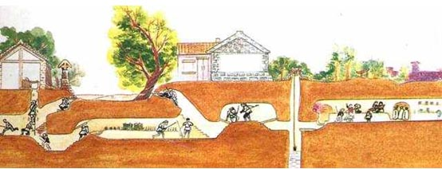

日常刷题,希望新型肺炎传染病快点结束。
题目
地道战是在抗日战争时期，在华北平原上抗日军民利用地道打击日本侵略者的作战方式。地道网是房连房、街连街、村连村的地下工事，如下图所示。

我们在回顾前辈们艰苦卓绝的战争生活的同时，真心钦佩他们的聪明才智。在现在和平发展的年代，对多数人来说，探索地下通道或许只是一种娱乐或者益智的游戏。本实验案例以探索地下通道迷宫作为内容。
假设有一个地下通道迷宫，它的通道都是直的，而通道所有交叉点（包括通道的端点）上都有一盏灯和一个开关。请问你如何从某个起点开始在迷宫中点亮所有的灯并回到起点？
输入格式
输入第一行给出三个正整数，分别表示地下迷宫的节点数N（1<N≤1000，表示通道所有交叉点和端点）、边数M（≤3000，表示通道数）和探索起始节点编号S（节点从1到N编号）。随后的M行对应M条边（通道），每行给出一对正整数，分别是该条边直接连通的两个节点的编号。
输出格式
若可以点亮所有节点的灯，则输出从S开始并以S结束的包含所有节点的序列，序列中相邻的节点一定有边（通道）；否则虽然不能点亮所有节点的灯，但还是输出点亮部分灯的节点序列，最后输出0，此时表示迷宫不是连通图。
由于深度优先遍历的节点序列是不唯一的，为了使得输出具有唯一的结果，我们约定以节点小编号优先的次序访问（点灯）。在点亮所有可以点亮的灯后，以原路返回的方式回到起点。
输入样例 1：
1 | 6 8 1 |
2 | 1 2 |
3 | 2 3 |
4 | 3 4 |
5 | 4 5 |
6 | 5 6 |
7 | 6 4 |
8 | 3 6 |
9 | 1 5 |
输出样例 1：
1 | 1 2 3 4 5 6 5 4 3 2 1 |
输入样例 2：
1 | 6 6 6 |
2 | 1 2 |
3 | 1 3 |
4 | 2 3 |
5 | 5 4 |
6 | 6 5 |
7 | 6 4 |
输出样例 2：
1 | 6 4 5 4 6 0 |
DFS代码
1 | #include<bits/stdc++.h> |
2 | using namespace std; |
3 | int n,m,k,a,b,sum; |
4 | int Map[1100][1100]={0}; |
5 | int vis[10000]={0}; |
6 | void dfs(int x){ |
7 | vis[x]=1; |
8 | if(x==k){ |
9 | sum++; |
10 | } |
11 | if(sum==2){ |
12 | return; |
13 | } |
14 | for(int i=1;i<=n;i++){ |
15 | if(Map[x][i]==1&&!vis[i]){ |
16 | vis[i]=1; |
17 | printf(" %d",i); |
18 | dfs(i); |
19 | printf(" %d",x); |
20 | } |
21 | } |
22 | } |
23 | int main(){ |
24 | scanf("%d %d %d",&n,&m,&k); |
25 | for(int i=0;i<m;i++){ |
26 | scanf("%d %d",&a,&b); |
27 | Map[a][b]=1; |
28 | Map[b][a]=1; |
29 | } |
30 | sum=0; |
31 | printf("%d",k); |
32 | dfs(k); |
33 | for(int i=1;i<=n;i++){ |
34 | if(vis[i]==0){ |
35 | printf(" 0"); |
36 | break; |
37 | } |
38 | } |
39 | return 0; |
40 | } |